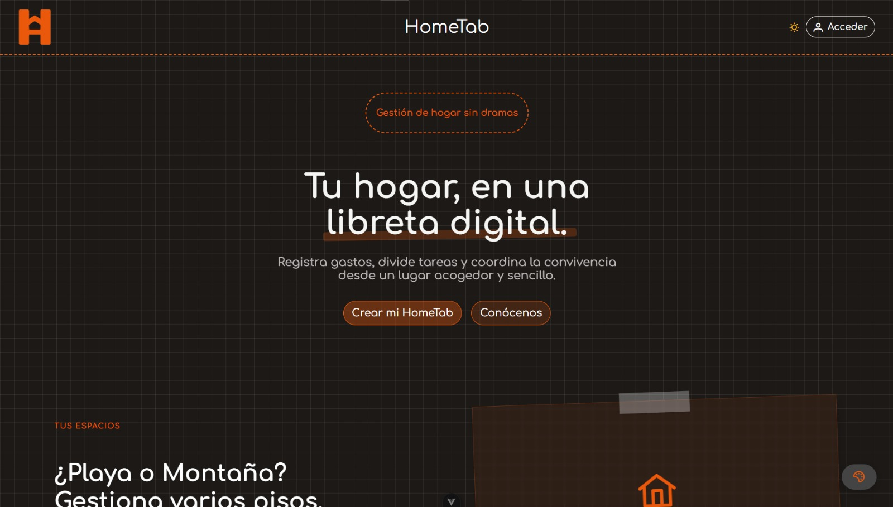
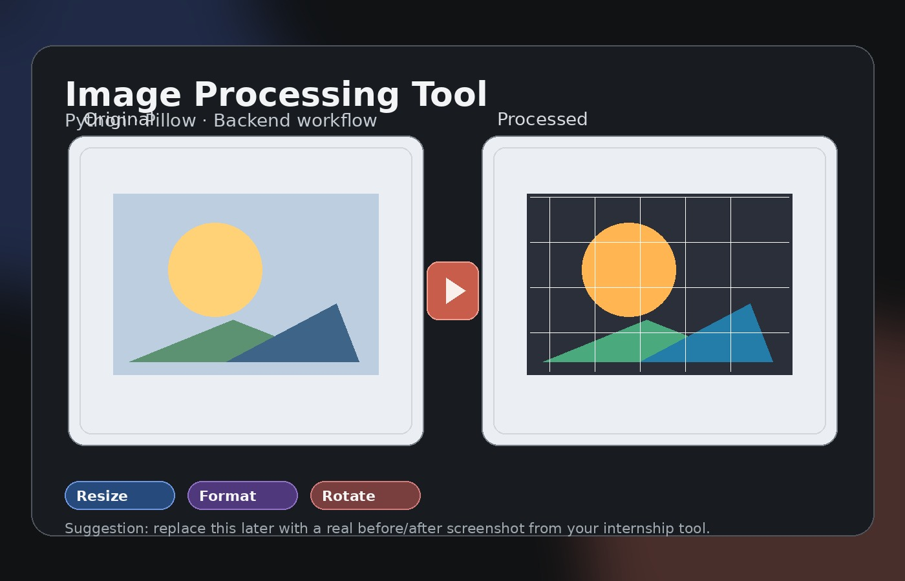
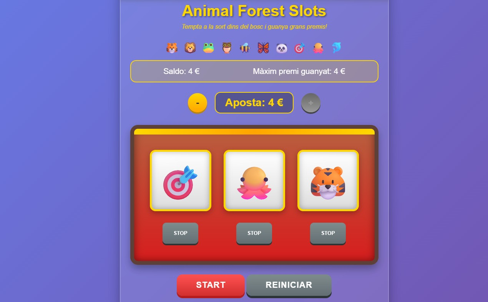
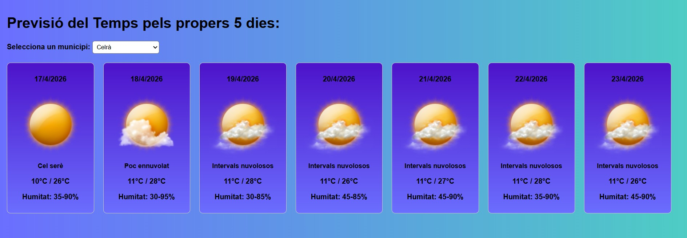
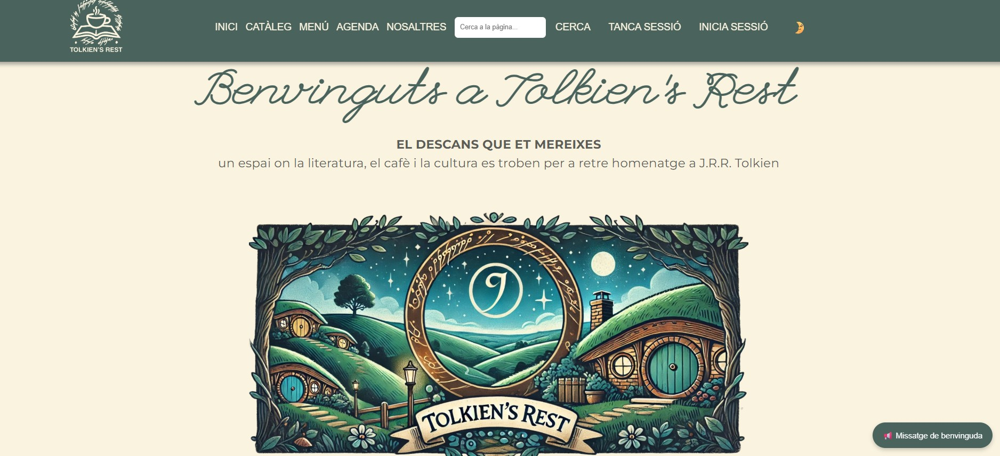

Abans
Llenguatge, anglès i ofici
Experiència en traducció, ensenyament d'anglès i altres feines que m'han fet més adaptable, directe i resolutiu.
Desenvolupador Web Full Stack en formació · Girona
Vinc del llenguatge; ara el transformo en codi que resol problemes
Combino precisió, estructura i resolució per crear aplicacions web útils, clares i ben pensades. Actualment estudio el Grau Superior de Desenvolupament d'Aplicacions Web a l'IES Montilivi i continuo ampliant perfil tant en front-end com en back-end.
Enfoc actual
Full stack junior
Amb base analítica, sensibilitat pel llenguatge i interès real per entendre com encaixa tot l'stack.
Ara mateix
Image Processing Tool
En pràctiques, treballant en una eina backend de gestió i processament d'imatges amb Python i Pillow.
Què em diferencia
Resolució + comunicació
Experiència prèvia, autonomia, carisma i capacitat per aprendre ràpid sense perdre ordre ni criteri.
Sóc una persona curiosa, resolutiva i orientada a l'aprenentatge continu. M'adapto bé als entorns canviants i m'agrada treballar amb estructura, iniciativa i capacitat real de resposta.
Abans d'entrar en el desenvolupament web havia treballat en altres camps, sobretot en traducció i ensenyament d'anglès. Aquesta base m'ha deixat una cosa que continuo aplicant avui: claredat per comunicar, atenció al detall i criteri a l'hora d'ordenar idees.
Ara estudio el Grau Superior de Desenvolupament d'Aplicacions Web a l'IES Montilivi. M'interessa el perfil full stack, tot i que a les pràctiques estic treballant sobretot backend, en una aplicació centrada en gestió i processament d'imatges.
No em vull vendre com una cosa que no sóc. El meu punt fort ara mateix és combinar base tècnica, capacitat analítica i ganes serioses d'aprendre per convertir-me en un perfil sòlid dins del sector.
Experiència en traducció, ensenyament d'anglès i altres feines que m'han fet més adaptable, directe i resolutiu.
Entrada formal al món del desenvolupament amb una orientació pràctica: construir, entendre i resoldre.
Des de HomeTab fins a exercicis de front-end i maquetació, he anat consolidant base tècnica i criteri visual.
A les pràctiques estic treballant amb Python i Pillow en una eina orientada a gestió i processament d'imatges.
Aplicació de gestió de tasques, pagaments, esdeveniments i convivència pensada per a llars o grups de persones.

LandingEina backend per generar, gestionar i processar imatges, orientada a fluxos de treball més tècnics i modulars.

WorkflowMàquina escurabutxaques desenvolupada íntegrament amb HTML, CSS i JavaScript, centrada en lògica, aleatorietat i animacions.

GameplayApp meteorològica connectada a una API externa per consultar la previsió i mostrar la informació amb una interfície clara.

ForecastWeb estàtica per a un cafè-llibreria d'inspiració tolkieniana, amb una estètica més evocadora i editorial.

LandingEl nucli tècnic que més estic treballant ara mateix.
Especial atenció a estructura, llegibilitat, usabilitat i experiència d'usuari.
 PrimeVue
PrimeVue
Interès real per la part lògica, modular i de processament.
No només eines: també manera de treballar.
Una combinació poc comuna entre perfil humà i base tècnica.
El següent pas és fer més sòlida la base tècnica i portar-la a entorns més reals.
Disponible per a noves oportunitats
Si vols contactar-me o t'interessa el meu perfil, escriu-me directament.
Contacte directe
Disponibilitat
Obert a pràctiques, primera oportunitat junior, col·laboracions i projectes que em permetin continuar creixent dins del sector.